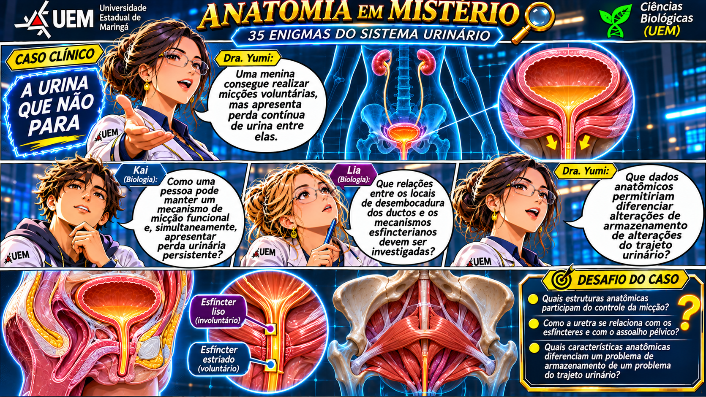

Entre no universo
da Anatomia 3D.
Explore cenários anatômicos, investigue casos clínicos, monte quebra-cabeças e converse com a Dra. Yumi. Cada descoberta aproxima você de um novo mistério.

Explore o Sistema Urinário em 3D
Explore cada região anatômica com imagens ampliáveis, áudio explicativo e acesso direto aos quebra-cabeças.
A jornada começa
Explore a anatomia e seus mistérios.
Selecione uma região, investigue suas estruturas e ative um desafio.
Reconstrua o mapa anatômico
Monte as imagens anatômicas, tocando em duas peças para trocá-las de lugar. No computador, também é possível arrastar as peças.
Selecione uma imagem para começar.
Complete cada imagem para ganhar 15 moedas. A recompensa é concedida uma vez por imagem e dificuldade.
Yumi, a exploradora de curiosidades
Uma guia anime com respostas temáticas locais, áudio em português e sugestões de perguntas. Funciona sem internet; não é um chatbot generativo conectado.
Dra. Yumi
Guia de Anatomia Humana
Respostas educativas, não diagnósticos. Para dúvidas fora da biblioteca, a guia indica temas próximos.
Arraste as peças para montar a sequência anatômica. No celular, toque em uma peça e depois na posição desejada.
Sua resposta, na ordem:
Seu laboratório, suas descobertas.
As respostas ficam ocultas até sua tentativa. O professor pode consultar o gabarito mediante senha. A impressão gera uma versão com perguntas, alternativas e espaço para anotações.